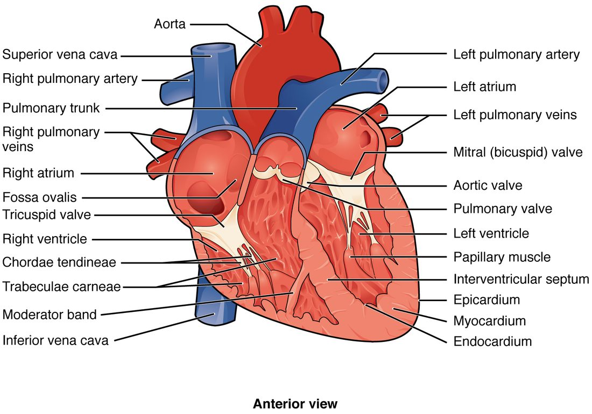

Chambers, valves and great vessels
1Why this matters
Mrs. Okafor, 71, suddenly becomes short of breath two days after chest pain. Her doctor hears a new whooshing sound with every beat. An ultrasound shows why: one of the small muscles that holds the cords of her mitral valve has torn, and the valve now flips backward into the left atrium each time the left ventricle squeezes.
2What this builds on
3Quick check before you start
1. Which layer of the heart wall lines the inside of the heart and covers its valves?
- Epicardium
- Myocardium
- Endocardium
Show the answer
The endocardium is the endothelial lining of every space inside the heart, and it covers the valve cusps. The epicardium covers the outside, and the myocardium is the muscle in between.
- Epicardium:
- Myocardium:
- Correct: Endocardium:
2. By definition, which way does an artery carry blood?
- Away from the heart
- Toward the heart
- Between two capillaries
Show the answer
Arteries carry blood away from the heart and veins carry it toward the heart. Capillaries are the tiny vessels between them.
- Correct: Away from the heart:
- Toward the heart:
- Between two capillaries:
3. Blood flows through a tube from region A to region B. What must be true?
- Pressure is higher at B than at A
- Pressure is higher at A than at B
- Pressure is equal at A and B
Show the answer
Fluid flows down a pressure gradient, from higher pressure to lower pressure. With no pressure difference, there is no flow.
- Pressure is higher at B than at A:
- Correct: Pressure is higher at A than at B:
- Pressure is equal at A and B:
4Anatomy

With labels hidden, select a box to reveal its label.
5How it works, step by step
- The ventricle muscle contracts, raising the pressure of the blood inside the ventricle.Blood pushes up on the cusps of the atrioventricular valve, and the cusps meet and seal the opening.
- The papillary muscles, part of the same ventricle wall, contract at the same moment.They pull the chordae tendineae tight.
- The taut chordae tendineae hold the cusp edges down.The cusps cannot flip up into the atrium, so blood does not flow backward into the atrium.
- With the atrioventricular valve sealed, rising ventricular pressure pushes blood toward the exit.Blood presses the semilunar valve's cusps flat against the artery wall and flows out into the artery.
- When the ventricle relaxes and blood starts to slip back toward it, blood fills the semilunar cusps' pockets.The three pockets bulge together and seal, so blood does not flow back into the ventricle.
6Core concepts
7A common mistake
The wrong idea: The left ventricle has a thicker wall because it pumps more blood than the right ventricle.
What actually happens: Both ventricles pump the same volume of blood each beat. The left wall is thicker because the vessels of the whole body resist flow far more than the vessels of the lungs, so the left ventricle has to generate about five times the pressure (about 120 versus 25 mm Hg). Heart muscle thickens when it works against a heavier load.
8Check yourself
Anything you miss goes into your review queue.
1. Which chamber receives blood from the superior and inferior venae cavae?
- Left atrium
- Right ventricle
- Right atrium
- Left ventricle
Show the answer
Both venae cavae empty into the right atrium, the receiving chamber on the right side of the heart.
- Left atrium: The left atrium receives the pulmonary veins from the lungs, not the venae cavae.
- Right ventricle: The right ventricle receives blood from the right atrium, through the tricuspid valve, not directly from the venae cavae.
- Correct: Right atrium: Correct. The venae cavae deliver blood from the body into the right atrium.
- Left ventricle: The left ventricle receives blood from the left atrium and sends it into the aorta.
2. Name the pinned valve, between the left atrium and the left ventricle.
- Tricuspid valve
- Aortic valve
- Pulmonary valve
- Mitral valve
Show the answer
The valve between the left atrium and the left ventricle is the mitral valve (also called the bicuspid valve). It has two cusps.
- Tricuspid valve: The tricuspid valve sits between the right atrium and the right ventricle, on the other side of the heart.
- Aortic valve: The aortic valve sits at the exit from the left ventricle into the aorta, not between the left atrium and ventricle.
- Pulmonary valve: The pulmonary valve sits at the exit from the right ventricle into the pulmonary trunk.
- Correct: Mitral valve: Correct. This is the mitral valve, the left atrioventricular valve.
3. Order the parts of the mitral valve apparatus, starting at the opening between the left atrium and left ventricle and ending in the ventricle wall.
- Valve cusps
- Chordae tendineae
- Papillary muscle
- Myocardium of the ventricle wall
Show the answer
The cusps hang into the ventricle, the chordae tendineae run from the cusp edges down to the papillary muscles, and the papillary muscles rise from the ventricle's myocardium.
- Correct order: 1. Valve cusps 2. Chordae tendineae 3. Papillary muscle 4. Myocardium of the ventricle wall
4. Mrs. Okafor, 71, tears one of the papillary muscles in her left ventricle. What happens each time her left ventricle contracts?
- The mitral valve cannot open, so blood cannot enter the ventricle
- Mitral cusps flip into the left atrium and blood leaks backward
- The aortic valve flips back into the ventricle and blood leaks in
- The tricuspid valve closes too early, so the right atrium overfills
Show the answer
Papillary muscles contract with the ventricle and pull the chordae tendineae tight, which stops the mitral cusps flipping up into the atrium. With one torn, the cusps it held swing up when the ventricle squeezes, and blood leaks backward into the left atrium.
- The mitral valve cannot open, so blood cannot enter the ventricle: Papillary muscles do not open the valve. Blood pushes the cusps open. Their job is to keep the closed cusps from flipping up, so losing one causes backward leak, not a stuck valve.
- Correct: Mitral cusps flip into the left atrium and blood leaks backward: Correct. Without the anchor, the cusps flip into the left atrium and blood flows backward with every contraction.
- The aortic valve flips back into the ventricle and blood leaks in: The aortic valve is a semilunar valve with no papillary muscles, so a torn papillary muscle does not affect it directly.
- The tricuspid valve closes too early, so the right atrium overfills: The tricuspid valve is on the right side of the heart. Mrs. Okafor's torn muscle is in the left ventricle.
5. The left ventricle wall is about three times as thick as the right ventricle wall. What best explains this?
- The left ventricle pumps a larger volume of blood with each beat
- Blood leaving the left ventricle has to travel a longer distance
- The blood in the left ventricle is thicker than the blood in the right
- The left ventricle has to generate about five times higher pressure
Show the answer
The vessels of the whole body resist flow far more than those of the lungs. To push the same volume through them, the left ventricle must raise pressure to about 120 mm Hg, versus about 25 mm Hg on the right. Muscle that works against a heavier load thickens.
- The left ventricle pumps a larger volume of blood with each beat: Both ventricles pump the same volume each beat. If they did not, blood would pile up on one side within minutes.
- Blood leaving the left ventricle has to travel a longer distance: Distance alone is not the cause. What sets the work is the pressure needed to overcome the resistance of the vessels.
- The blood in the left ventricle is thicker than the blood in the right: Blood on both sides is the same blood, with the same thickness. It passes through the right side first and the left side next.
- Correct: The left ventricle has to generate about five times higher pressure: Correct. The higher pressure load on the left ventricle is what thickens its wall.
6. Fill the gap in the right side of the heart: right atrium → tricuspid valve → ____ → pulmonary valve → pulmonary trunk.
- Right ventricle
- Left atrium
- Aorta
- Pulmonary veins
Show the answer
The tricuspid valve opens into the right ventricle, and the right ventricle pumps out through the pulmonary valve into the pulmonary trunk.
- Correct: Right ventricle: Correct. The right ventricle lies between the tricuspid valve and the pulmonary valve.
- Left atrium: The left atrium is on the other side of the interatrial septum and receives the pulmonary veins.
- Aorta: The aorta leaves the left ventricle through the aortic valve, not the right side.
- Pulmonary veins: The pulmonary veins bring blood from the lungs into the left atrium. They are not part of the right side of the heart.
7. The electrical signal that makes the atria contract cannot spread directly into the ventricle muscle. Which structure is responsible?
- The interventricular septum
- The cardiac skeleton
- The pericardial sac
- The chordae tendineae
Show the answer
The cardiac skeleton is dense collagen lying between the atria and the ventricles. Collagen does not conduct electrical signals like muscle does, so the signal can cross only at one specialized pathway.
- The interventricular septum: The interventricular septum separates the right and left ventricles, so it lies between the two pumping chambers rather than between the atria and the ventricles.
- Correct: The cardiac skeleton: Correct. The dense connective tissue of the cardiac skeleton insulates the atria from the ventricles.
- The pericardial sac: The pericardial sac surrounds the whole heart on the outside. It does not sit between the atria and the ventricles.
- The chordae tendineae: The chordae tendineae are cords inside the ventricles that hold valve cusps. They do not block electrical signals between chambers.
9Summary
Two atria receive blood from veins; two ventricles pump it into arteries. The venae cavae enter the right atrium, the pulmonary trunk leaves the right ventricle, the pulmonary veins enter the left atrium, and the aorta leaves the left ventricle. The tricuspid and mitral valves sit between atria and ventricles and are held by chordae tendineae and papillary muscles; the pulmonary and aortic semilunar valves guard the exits and close by filling like pockets. Three septa divide the chambers, and the fossa ovalis marks the interatrial septum. The left ventricle wall is thickest because it works against the highest pressure. The cardiac skeleton anchors the valves and muscle and stops electrical signals crossing straight from atria to ventricles.